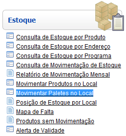

Movimentar Paletes no Local [ Voltar ]
Utilize esta tela para movimentar paletes
de um endereço de armazenagem a outro.
O formulário"Movimentar Paletes no Local"
encontra-se dentro do menu "Estoque".

Ao clicar no formulário, a seguinte tela
será exibida:
Para preencher a
movimentação, siga os passos abaixo:
1º Passo: clique
no botão  para salvar esta movimentação.
Ao salvar o registro, uma grade será exibida para que informações
adicionais sobre a movimentação sejam especificadas. para salvar esta movimentação.
Ao salvar o registro, uma grade será exibida para que informações
adicionais sobre a movimentação sejam especificadas.
Observação:
se necessário, deposite informações adicionais sobre a movimentação no
campo "Observações".
2º
Passo: selecione o palete que deve ser movimentado.
Especifique, na coluna "Palete", o código do palete desejado (este pode ser digitado manualmente ou utilizando a ferramenta de pesquisa do próprio campo, a qual é acessada ao clicar no botão  , visível ao clicar no campo). Insira também o Endereço de Destino da movimentação. Após inserir todas estas informações, clique no botão "Salvar" . , visível ao clicar no campo). Insira também o Endereço de Destino da movimentação. Após inserir todas estas informações, clique no botão "Salvar" .
Observações:
- O palete a ser movimentado precisa estar com o status "Fechado" (no formulário "Endereços de Armazenagem", no menu "Cadastros").
- Na parte inferior da tela é mostrado o estoque contido no palete selecionado:
4°
Passo: clique no botão
para concluir a movimentação. Após o processamento, clique
no botão  para visualizar o relatório "Movimentação de Palete - Local". Para
imprimir o relatório, clique no botão
para visualizar o relatório "Movimentação de Palete - Local". Para
imprimir o relatório, clique no botão  [Imprimir]
do navegador. [Imprimir]
do navegador.
Ir
para o topo da página |